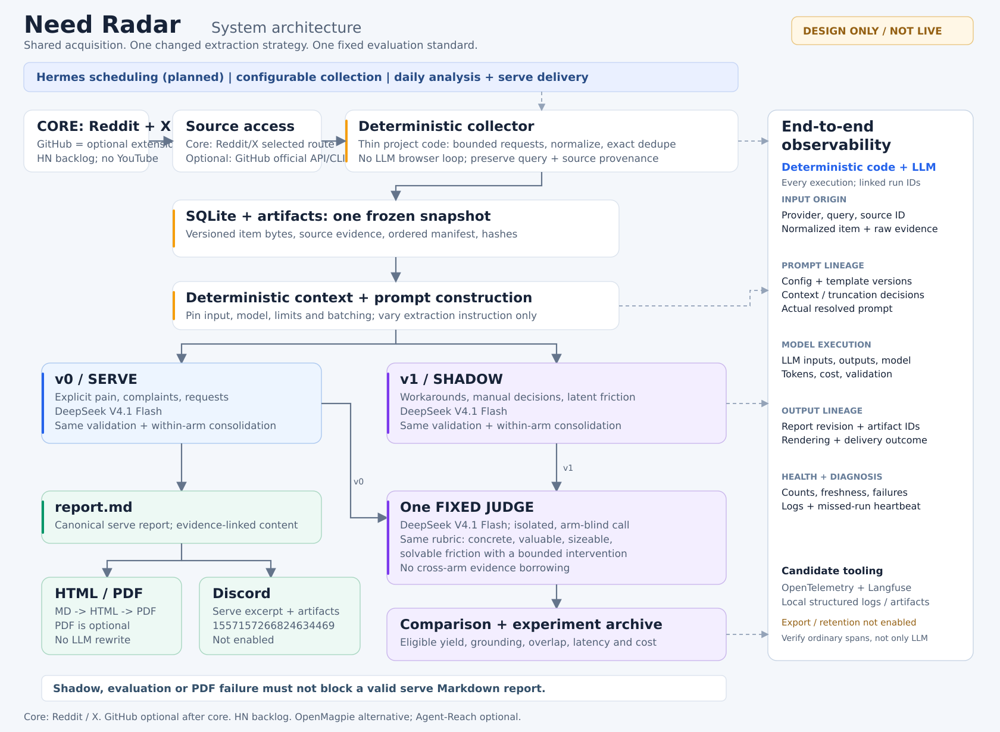

读图要点
一套采集，两种提取角度，一个固定评测标准。 上半部共用 source、retrieval 和冻结输入；下半部只有 extraction 指令不同。
正式发布与实验隔离。 v0 生成唯一内容源 report.md；HTML、可选 PDF、Discord 从同一内容产生。Shadow 与 judge 不阻塞正式报告，也不自动成为 serve。
Observability 覆盖 deterministic 程序。 保留 query/provider、配置、输入内容、context/truncation 决策、最终 prompt、模型响应及报告/投递关联。虚线为部分控制/诊断关联，不是业务前置依赖。
已指定、尚未启用
模型：DeepSeek V4.1 Flash。Discord 频道：1557157266824634469。Treg live access、模型账号、预算、bot 权限、调度与外部 telemetry 尚未激活。本图是设计文档，不表示实际运行成功。